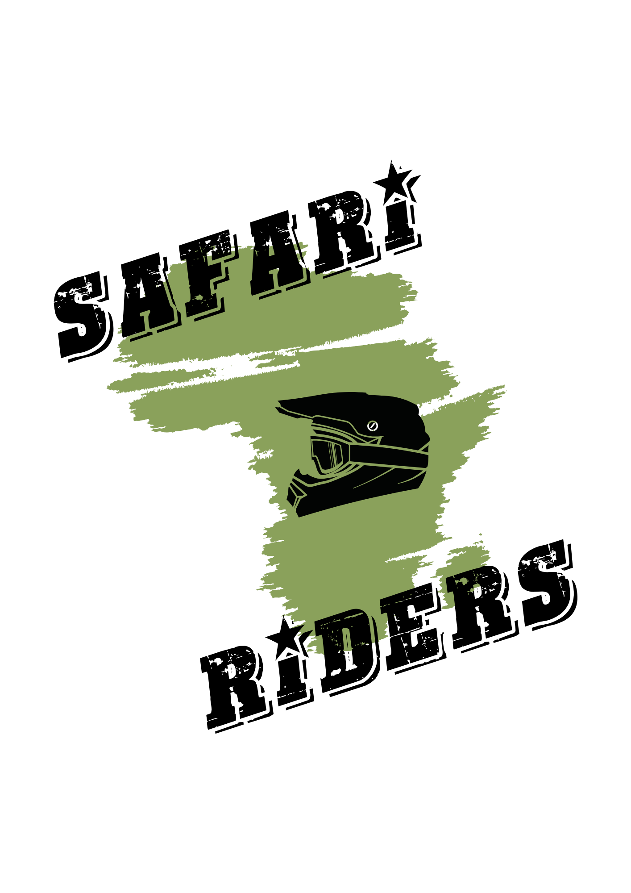

رحلات خاصة في كينيا — سفاري، طبيعة، مغامرة، وضيافة تُدار بأدق تفاصيلها.
العمودي للسياحة
SAFARI ADVENTURE TOURS & RIDERS
لماذا كينيا
غابات تسقيها الأمطار، بحيرات، مرتفعات خضراء طوال السنة، وحياة برية على مستوى نظرك.
طريقتك في الاكتشاف
سفاري خاص
مسار مصمم لمجموعتك وحدها، بسيارة دفع رباعي بسقف مفتوح، وإقامة تختارها بنفسك.
جولات الدراجات
جولات جماعية بقيادة خبراء من المرتفعات إلى الساحل، بدعم كامل طوال الطريق.
أو الاثنان معاً
أيام في البرية وأيام على الطريق، في رحلة واحدة متّصلة.
التجارب
جولات المشاهدة
صباحية ومسائية وليلية.
منطاد الهواء
إقلاع مع أول ضوء.
ركوب الخيل
بين المزارع والمحميات.
رحلات التصوير
سقف مفتوح وتوقيت للضوء.
سفاري مشياً
برفقة حارس مسلّح.
امتداد للساحل
ختام على المحيط الهندي.
الوجهات
ماساي مارا
أمبوسيلي
أول بيجيتا
بحيرة ناكورو
بحيرة نايفاشا
جبل كينيا
أبردير
الوادي المتصدع
نيروبي
مومباسا والساحل
لضيوفنا من الخليج
تواصل بالعربية
من أول رسالة حتى نهاية الرحلة.
طعام حلال
مُرتّب ضمن البرنامج.
خصوصية العائلة
سيارة وإقامة خاصة بكم.
مجموعتك وحدها
لا نضمّكم لمجموعات أخرى.
رحلة على مقاسك
أخبرنا بعدد الأيام ومن معك وما يهمّك — ونعود إليك ببرنامج مكتوب يوماً بيوم، بالتكلفة كاملة قبل أي التزام.
لنبدأ التخطيط
واتساب
+254 710 789 789
إنستغرام · تيك توك
safariadventure254
سناب شات
safarikenya254
safariadventureriders.com